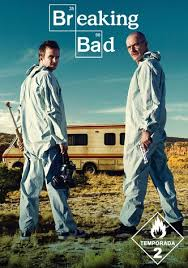

| Página 1 | Página 2 | Página 3 | index |
Breaking Bad
God serie -Orlando
Breaking Bad es una serie de televisión estadounidense que sigue la transformación de Walter White, un profesor de química de secundaria que, tras ser diagnosticado con cáncer de pulmón, decide fabricar y vender metanfetaminas para asegurar el futuro económico de su familia. Con la ayuda de su exalumno Jesse Pinkman, Walter se adentra en el peligroso mundo del narcotráfico, adoptando el alias de "Heisenberg" y dejando atrás su vida ordinaria para convertirse en un poderoso y temido criminal.

A medida que la historia avanza, Walter se enfrenta a múltiples desafíos, incluyendo la competencia con otros narcotraficantes, la constante amenaza de ser descubierto por su cuñado Hank Schrader, un agente de la DEA, y el deterioro de sus relaciones familiares. Su ambición y deseo de control lo llevan a tomar decisiones cada vez más peligrosas, afectando a quienes lo rodean, especialmente a Jesse, quien lucha con el peso de sus propias acciones y la influencia de Walter en su vida. La serie también introduce personajes memorables como Gus Fring, un meticuloso narcotraficante con quien Walter desarrolla una tensa alianza.

Lo que hace de Breaking Bad una de las mejores series de todos los tiempos es su impecable narrativa, desarrollo de personajes y giros inesperados. La transformación de Walter White de un hombre común a un despiadado criminal es uno de los arcos más impactantes en la televisión, explorando temas como la moralidad, el poder y las consecuencias de la ambición desmedida. Con una cinematografía excepcional y actuaciones magistrales, la serie ofrece una historia intensa y adictiva que ha dejado una huella imborrable en la cultura pop.